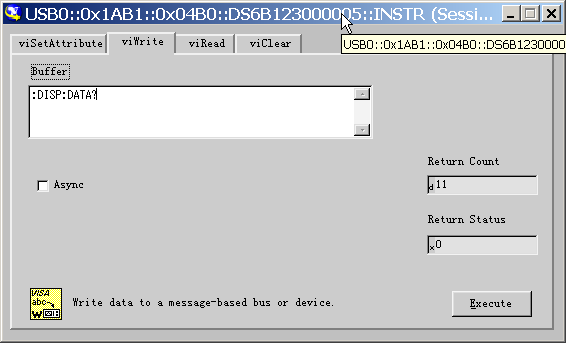
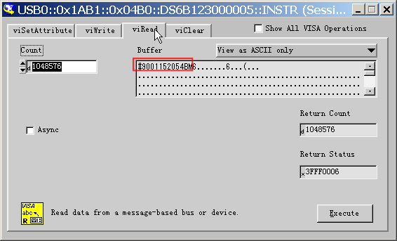

:DISPlay:DATA?
命令格式
:DISPlay:DATA?
功能描述
读取当前显示图像的位图数据流。
说明
PC端通过VISA接口发送命令，仪器响应命令后直接将当前显示图像的位图数据流返回至PC端缓存区。
返回格式
位图数据流格式：
|
组分 |
大小（长度） | 示例 | 说明 |
| TMC Blockheader | N1 +2 | #9001152054 | TMC Blockheader ::= #NXXXXXX，用于描述数据流的长度。其中#作为数据流起始标志符。N小于等于9，其后跟随的N个数据表示数据流的长度（字节数）。如#9001152054，其中N为9，其后的001152054 表示后面紧跟的数据流中包含 1152054 Byte的有效数据。 |
|
BMP Data |
800*480*3+54=11520542 |
BM... |
具体的位图数据。 |
注1：N是TMC头中描述数据长度的宽度，如#90000。
注2：宽度为800，高度为480，位深度为24Bit = 3 Byte，54为位图文件头的大小。
举例
1.
确保有足够的缓存接收数据流，否则在读取时程序可能异常；
2.
返回的数据流中含有TMC数据头，需要去掉才是符合标准的位图数据流；
3.
数据量大于1M，如果接口通讯速度不足，需要设定适当的超时时间；
4.
数据结束位置的结束符'\n'(0X0A)需要去掉。
--------------------------------发送：------------------------------------------

--------------------------------读取：------------------------------------------
